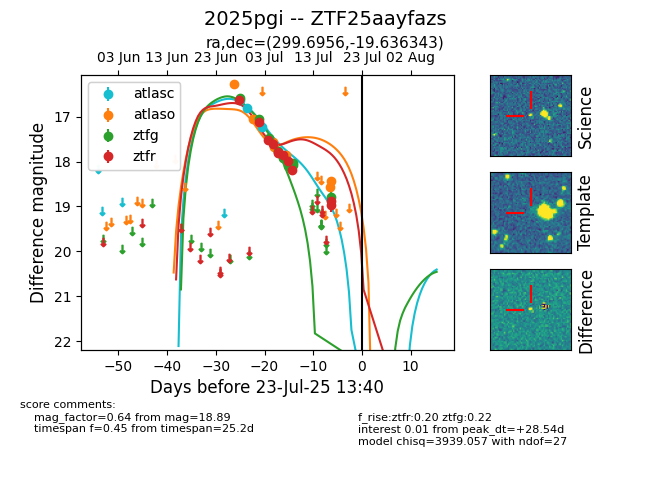

Target ZTF25aayfazs at 2025-07-23 13:40, see:
FINK: fink-portal.org/ZTF25aayfazs
Lasair: lasair-ztf.lsst.ac.uk/objects/ZTF25aayfazs
ALeRCE: alerce.online/object/ZTF25aayfazs
TNS: wis-tns.org/object/2025pgi
YSE: ziggy.ucolick.org/yse/transient_detail/2025pgi
alt names
ZTF25aayfazs (ztf,fink)
2025pgi (tns,yse)
coordinates:
equatorial (ra, dec) = (299.6956,-19.63634)
galactic (l, b) = (21.9648,-23.32919)
photometry
last atlasc=17.23, atlaso=18.43, ztfg=18.79, ztfr=18.89
3 atlasc, 8 atlaso, 10 ztfg, 11 ztfr detections
